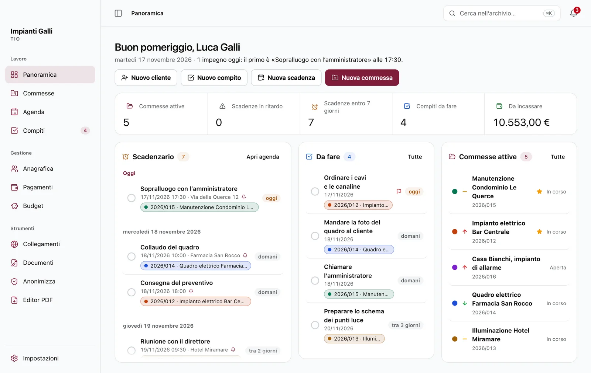
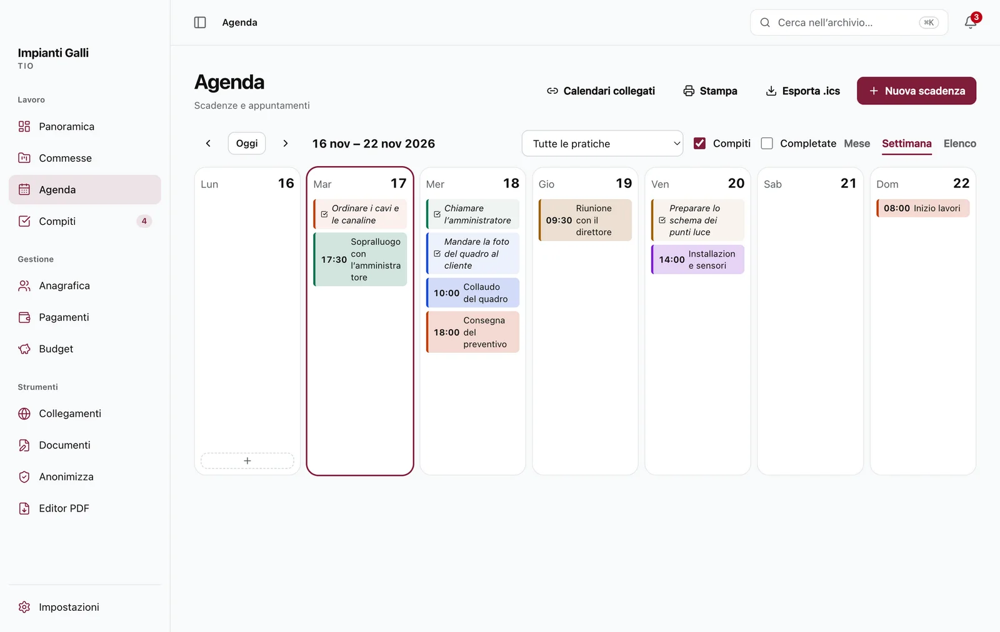
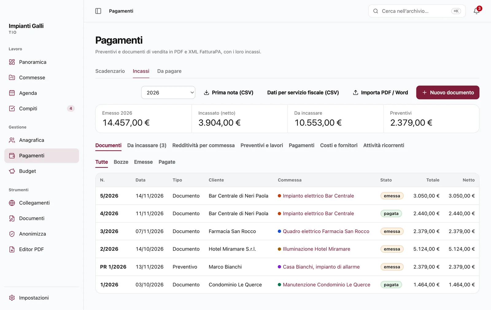
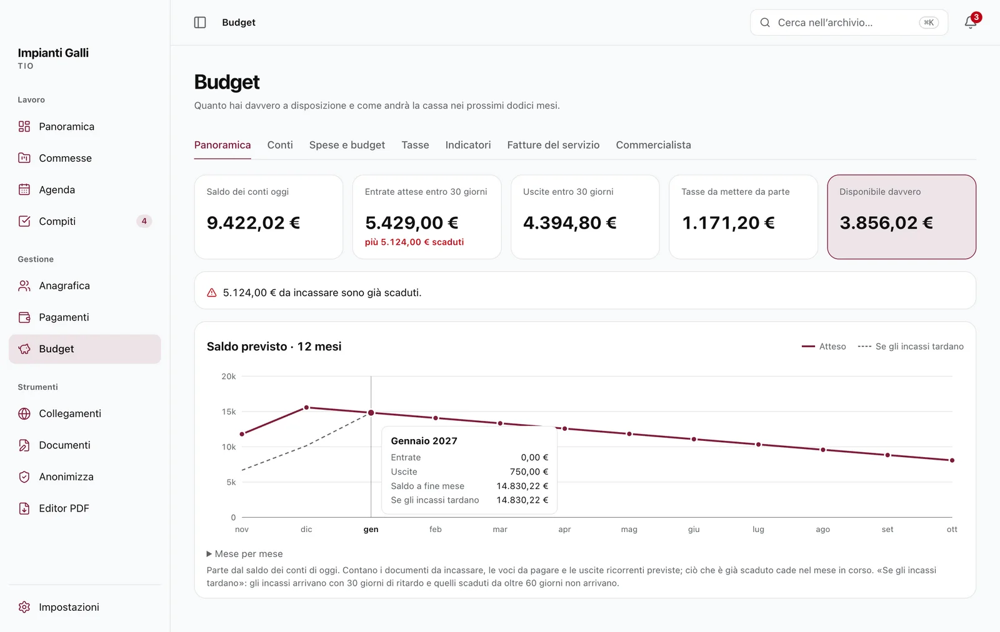
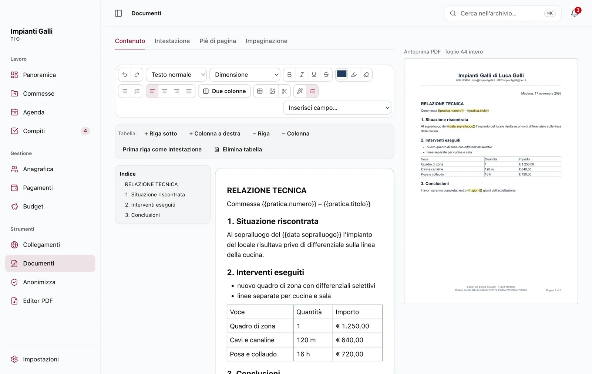
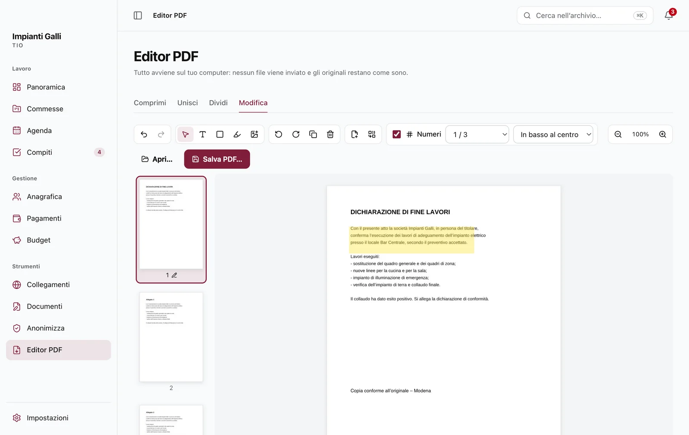
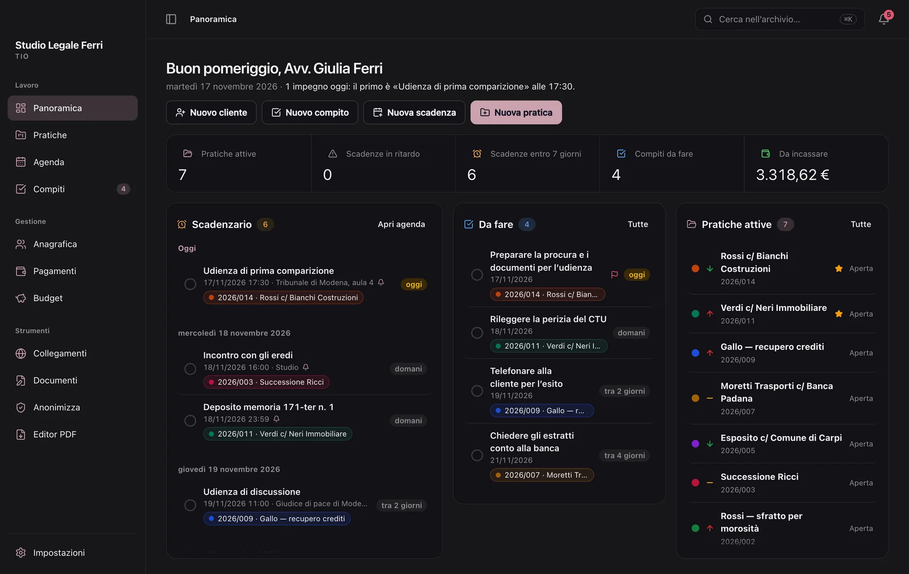

Apri e sai cosa c’è da fare.
Impegni di oggi, compiti, lavori in corso e quanto resta da incassare. Ogni pratica ha colore, stato e priorità: alta, media o bassa a colpo d’occhio.


Il tuo lavoro, sul tuo computer.
Clienti, pratiche, agenda, documenti, fatture, pagamenti e budget in un’app sola. Per studi legali, liberi professionisti e ditte individuali.
Provala qui, senza installare nulla · macOS 13 o successivo, Windows 10 e 11
Gratis. Senza account. Senza abbonamento.
Una TIO in miniatura, con dati di esempio. Spunta un compito, apri una pratica, cambia una priorità, guarda come va la cassa.
La demo vive in questa pagina: non salva e non invia nulla.
Trascina per confrontare: lo stesso lavoro, prima sparso tra cartelle, fogli di calcolo, posta, calendario e foglietti; poi in TIO.
Impegni di oggi, compiti, lavori in corso e quanto resta da incassare. Ogni pratica ha colore, stato e priorità: alta, media o bassa a colpo d’occhio.

Scadenze e appuntamenti con uno o più avvisi, anche a finestra chiusa. Gli impegni del tuo provider calendario compaiono accanto ai tuoi, in sola lettura.

PDF con la tua intestazione, IVA, bollo e cassa già calcolati, e il file XML FatturaPA per il tuo canale verso lo SdI. Lo scadenzario mostra entrate e uscite mese per mese.

Saldo reale dei conti, previsione di cassa a dodici mesi, budget per categoria e per lavoro, rate, indicatori e quanto mettere da parte per le tasse. Legge le fatture del tuo servizio di fatturazione senza toccarlo e prepara il pacchetto per il commercialista.

Modelli tuoi o pronti, con intestazione e piè di pagina; cliente, indirizzo e oggetto si scrivono da soli. Salvi in Word, PDF e altri formati, nella cartella del lavoro.

Comprimi gli allegati per la PEC, unisci e dividi, riordina e ruota le pagine, scrivi una nota, evidenzia, firma e numera. Tutto sul tuo computer, anche con i PDF protetti.

Toglie nomi e dati personali prima di condividere un testo o darlo a un’IA; poi li rimette al loro posto.
I file restano nelle tue cartelle, sottocartelle comprese: TIO li mostra nella pratica e li ritrova se li sposti.
⌘K o Ctrl+K: clienti, lavori, scadenze, note e il testo dentro PDF e scansioni.
Compensi forensi e termini processuali per gli avvocati; scadenze fiscali per tutti.
Backup automatico, anche su disco esterno e con password. Su un computer nuovo riparti da lì.
Al primo avvio scegli chi sei: parole, documenti e calcoli si adattano.
Ogni incarico con documenti, scadenze e ore; preventivi che diventano fatture; cassa previdenziale, ritenuta e regime forfettario già previsti.
Commesse e manutenzioni con i loro documenti, i costi dei fornitori e il margine di ogni lavoro; conferme d’ordine e solleciti già scritti.
Ruolo, autorità e giudice in ogni pratica; udienze con avvisi, conflitti di interesse, parcelle con i parametri forensi e termini calcolati con la sospensione feriale.
L’archivio è un file sul tuo computer. TIO non ha server, non chiede account e non raccoglie statistiche; funziona anche senza internet. Il codice è pubblico: chiunque può verificarlo.

Gratis, in italiano, senza permessi da amministratore.
Sul Mac, menu Apple › Informazioni su questo Mac: «Chip Apple M…» indica Apple Silicon; «Processore Intel» indica Intel.
Apri il file .dmg scaricato. Serve macOS 13 Ventura o successivo.
TIO non passa dall'App Store: la prima volta lo consenti da Impostazioni di Sistema › Privacy e sicurezza.
Scegli la tua attività, scrivi il nome e inizia. A finestra chiusa TIO resta nella barra dei menu.
Se il browser chiede, scegli di conservare il file. Windows 10 e 11 a 64 bit.
SmartScreen avvisa perché manca una firma a pagamento. L'installazione è in italiano e senza permessi da amministratore.
Scegli la tua attività, scrivi il nome e inizia. A finestra chiusa TIO resta vicino all'orologio.
I file per Mac con chip Apple o Intel e Windows 10 e 11 a 64 bit sono su GitHub, con i codici SHA-256 per verificarli.
Sì. Nessun abbonamento, nessuna versione a pagamento, nessuna pubblicità. Il codice è pubblico con licenza MIT.
No. Serve solo per scaricare TIO, per leggere un calendario collegato e per il controllo degli aggiornamenti, che puoi spegnere.
Solo tu. L’archivio sta sul tuo computer. Puoi bloccare TIO con una password e cifrare i backup; per il disco conviene attivare FileVault sul Mac o BitLocker su Windows.
Sì, senza account in mezzo: il tuo provider calendario tramite link iCal (sola lettura), la cartella in cui il tuo provider documenti scarica i file, Word ed Excel per modelli e importazioni, il tuo programma di posta e il canale della fattura elettronica tramite il file XML. Se fatturi con un altro servizio, TIO ne legge le fatture esportate (XML, .p7m o ZIP) per il budget, senza collegarsi al servizio e senza modificarlo.
Prepara il file XML FatturaPA, controllato con lo schema ufficiale. L’invio allo SdI, le ricevute e la conservazione restano al tuo canale o al commercialista.
Sì. Imposti l’IVA a zero: TIO aggiunge il bollo da 2 € quando serve. Cassa previdenziale e ritenuta si cambiano nello stesso posto. Nel Budget vedi quanto manca alla soglia dei ricavi e quanto mettere da parte per imposta sostitutiva e contributi.
Sì. Clienti, lavori, scadenze e fatture si importano da CSV o Excel, con un’anteprima e senza doppioni.
No. TIO è per una persona su un computer. Puoi esportare l’agenda in un file .ics per il calendario del telefono.
TIO fa una copia al giorno e tiene le ultime sette, anche su un disco esterno. Su un computer nuovo scegli «Ripristina da backup…».
Perché TIO non ha una firma a pagamento di Apple o Microsoft. I codici SHA-256 nella pagina delle versioni confermano che il file è quello pubblicato.